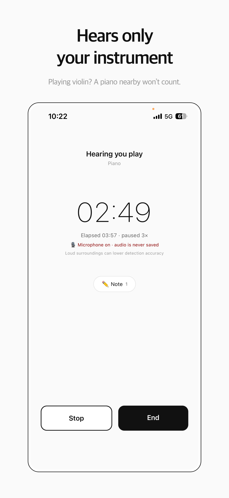
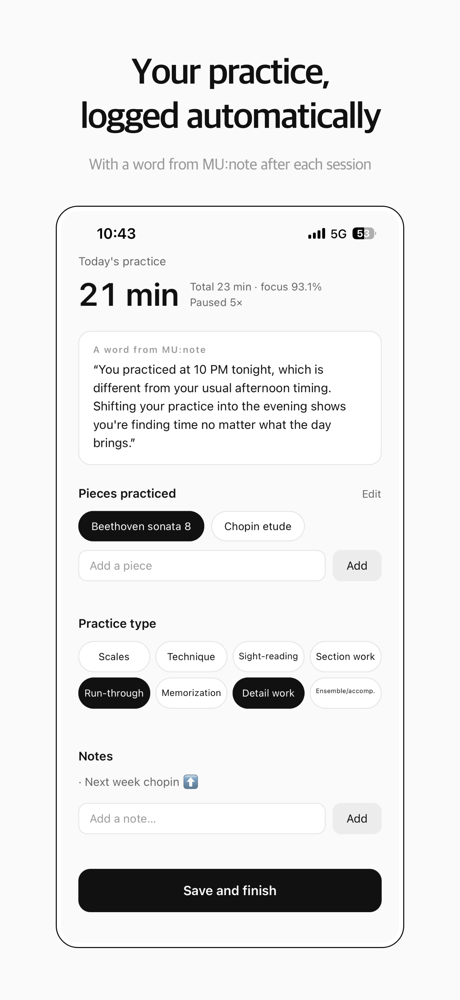
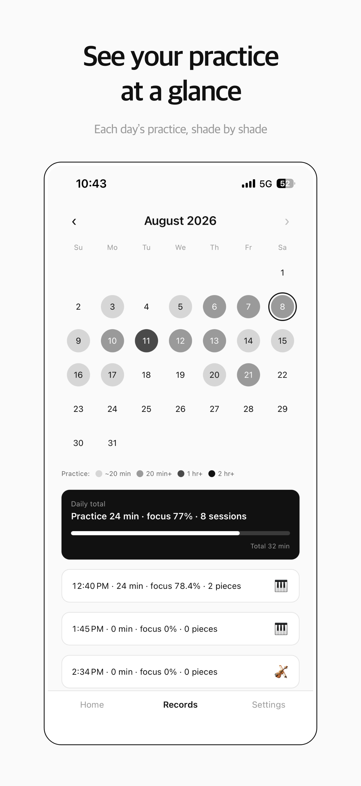
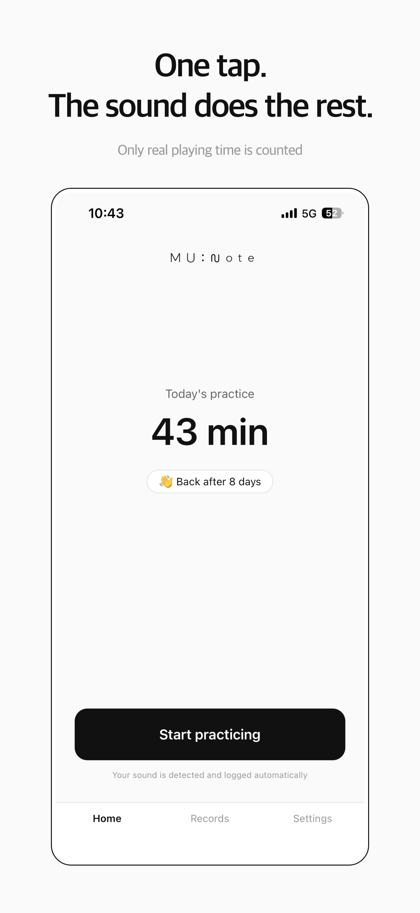
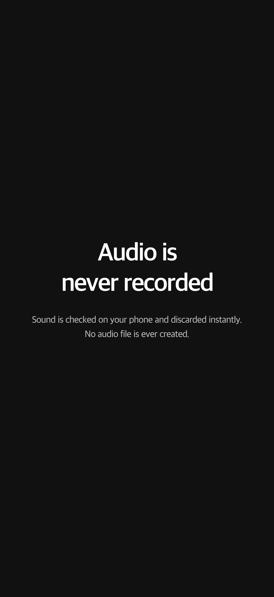

Start practicing — only your actual playing time adds up.
iOS app · works without an account
MU:note listens and keeps only the time you actually played.
Press start, practice — the app does the rest.
Built for music majors and students who are in the practice room every day.
Put your phone nearby and start practicing. Forget about the timer.
Time adds up only while the instrument you set is heard. Other instruments and noise don't count.
Your true playing time and focus build up on the calendar. On days you practice 20 minutes or more, one short line of analysis arrives.





Swipe to see more
MU:note recognizes the instrument you set — and nothing else. Turning pages, sipping water, short breaks: none of it is counted. Any silence longer than 15 seconds is left out. Piano, strings, winds, and voice are supported.
Sound is analyzed on your device and discarded instantly. No audio file is created. Nothing is sent anywhere. MU:note doesn't listen to what you play — only whether you're playing.
After each session, pick the pieces and practice types, and jot a quick note. The calendar shows every practice day, with daily totals and focus.
On days you practice 20 minutes or more, you get one short line drawn from your history. It uses numbers only — practice time and focus. Your notes and piece names are never sent.
Records and the calendar work fully without signing up. Sign in, and your history is stored safely — switch phones or reinstall, and it comes back.
One gentle reminder a day, at the time you choose. It never scolds you for a day off. Off by default.
Piano, strings, winds, and voice. Each instrument sounds different, so detection is tuned to the one you choose in settings.
No. Sound is analyzed on your device and discarded instantly. No audio file is created, and nothing is sent anywhere.
No. Records and the calendar work fully without signing up. Sign in, and your history is stored safely — switch phones or reinstall, and it comes back.
Yes, everything is free for now.
No. Turning pages, sipping water, short breaks: none of it is counted. Any silence longer than 15 seconds is left out.
It’s in the works. Android microphones differ by device, so we’re re-tuning how MU:note picks out your instrument. Sign up for the launch notice and we’ll let you know.
The time MU:note counts is the time we practiced together.
Practice done without the app is still practice.
Available in English, 한국어, Español, and Deutsch